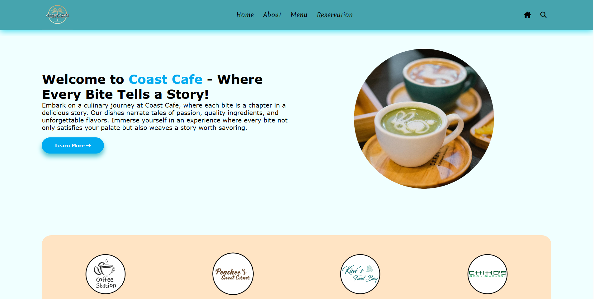
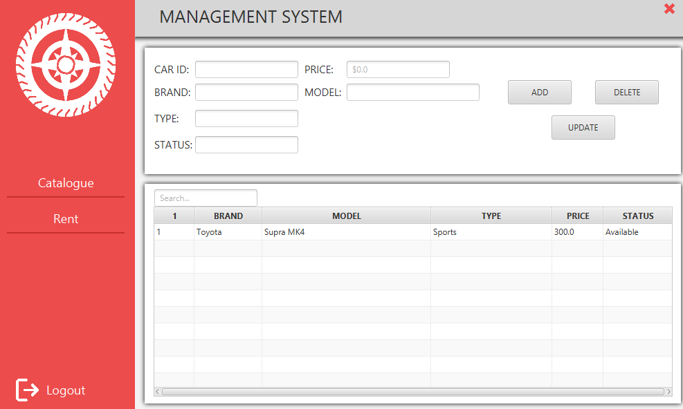
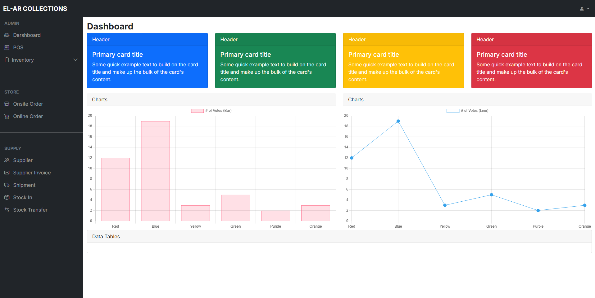
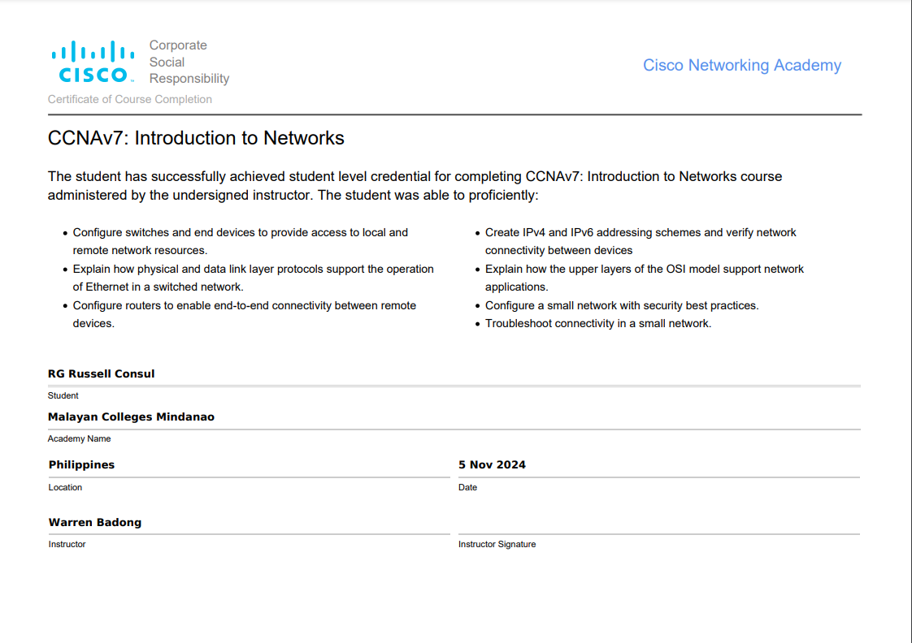

My Name is RG Russell Consul
Welcome to my portfolio! I’m an aspiring network engineer with a keen interest in designing, securing, and optimizing network infrastructures. As a student, I am continuously expanding my knowledge in computer networking, cybersecurity, and IT systems to build a strong foundation for a future in the industry.

A simple and elegant brochure website for Coast Café, designed to showcase its menu, location, and story. It features a clean, user-friendly layout with a coastal-inspired theme to reflect the café’s relaxing atmosphere.

A simple and efficient car rental system designed to streamline vehicle booking and management. This project allows users to browse available cars, check rental details, and manage reservations.

A comprehensive web application designed for efficient inventory tracking, sales processing, and business insights. This system integrates a Point of Sale (POS) module, allowing seamless transactions while keeping stock levels updated in real time.

A collection of certifications I have obtained, showcasing my expertise and continuous learning in technology and networking. These credentials highlight my commitment to professional growth and staying up to date with industry standards.